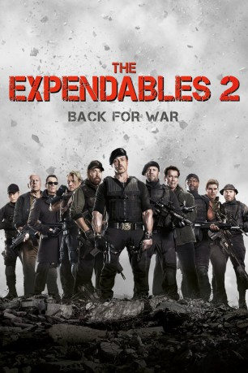

#327 The Expendables 2
 gesehen am 09.03.2015
gesehen am 09.03.2015
 
 IMDB-Wertung: 6.6 / 10
IMDB-Wertung: 6.6 / 10  Metascore: 51
Metascore: 51 
Barney Ross, Lee Christmas, Yin Yang, Gunnar Jensen, Toll Road und Hale Caesar nehmen verstärkt von den Neumitgliedern Billy the Kid und Maggie einen Auftrag von Mr. Church an, der nach leicht verdientem Geld klingt. Doch dann läuft der gesamte Plan aus dem Ruder und einer der ihren wird sogar ermordet. Die „Expendables“ kennen nur noch einen Gedanken: Rache! Daher begibt sich der Söldnertrupp auf seine gefährlichste Mission tief in feindliches Gebiet und stößt dabei auf eine Verschwörung, die das Kräfteverhältnis in der Welt verändern könnte und bei der sechs Pfund gefährliches Plutonium eine gewichtige Rolle spielen.
Jahr: 2012
Dauer: 103 Minuten
FSK: 18
Land: USA Studio: LionsgateTonspuren: DTS - ,
Untertitel:
Auflösung: 1080p (1920×800) Größe: 11059 MB
Genre: Action, Abenteuer, Thriller
Regisseur:  Simon West
Simon West
Drehbuch: Richard Wenk, Sylvester Stallone, Ken Kaufman, David Agosto, Richard Wenk
Soundtrack: Brian Tyler
Darsteller:
 Sylvester Stallone als Barney Ross
Sylvester Stallone als Barney Ross Jason Statham als Lee Christmas
Jason Statham als Lee Christmas Jet Li als Yin Yang
Jet Li als Yin Yang Dolph Lundgren als Gunner Jensen
Dolph Lundgren als Gunner Jensen Chuck Norris als Booker
Chuck Norris als Booker Jean-Claude Van Damme als Vilain
Jean-Claude Van Damme als Vilain Bruce Willis als Church
Bruce Willis als Church Arnold Schwarzenegger als Trench
Arnold Schwarzenegger als Trench Terry Crews als Hale Caesar
Terry Crews als Hale Caesar Randy Couture als Toll Road
Randy Couture als Toll Road Liam Hemsworth als Billy The Kid
Liam Hemsworth als Billy The Kid Scott Adkins als Hector
Scott Adkins als Hector Nan Yu als Maggie
Nan Yu als Maggie- Charisma Carpenter als Lacy
- Nikolette Noel als Billy's Wife
- Irina Krichely als Village Woman 1
- Sanya Borisova als Village Woman 6
- Biliana Petrinska als Village Woman 7
- Novak Djokovic als Himself , uncredited
- Amanda Ooms als Pilar
- George Zlatarev als Bojan
- Alexander Moskov als Stephan
- Nikola Dodov als Sick Man
- Wenbo Li als Hostage - Dr. Zhou
- Borislav Zahariev als Sang Leader / Sang Foreman
- Penka Kodova als Bartender
- Arkanay Boonsong als Rebel Leader
- Dimo Alexiev als Sang Soldier
- Velislav Pavlov als Sang
- Anton Trendafilov als Miner #1
- Marii Rosen als Miner #2
- Julian Stanishkov als Miner #3
- Velimer Velev als Miner #4
- Lyudmila Slaneva als Village Woman 2
- Silvia Petkova als Village Woman 3
- Alexandra Spasova als Village Woman 4
- Juliana Saiska als Village Woman 5
- Diana Dobreva als Village Woman 8
- Liubomir Simeonov als Giant Sang
- Aleksandar Belovski als Sang Soldier , uncredited
- Niki Stanchev als Miner #5 , uncredited
- Antoaneta Yordanova als Rebel Soldier , uncredited
Datei: X:\FSK18-Collections\Expendables\Expendables 2, The (2012, FSK18, 1920x800).mkv seit 16.02.2015
Festplatte: FSK18
 Alle Filme aus Gruppe 'FSK18-Collections\Expendables'
Alle Filme aus Gruppe 'FSK18-Collections\Expendables'